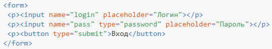

Подсказывающий текст
В дизайне часто требуется вставить пояснение к текстовому полю, но не всегда для этого имеется место. Решением в таком случае является добавление подсказывающего текста непосредственно внутрь поля, а при получении фокуса или вводе текста подсказка пропадает.
Это делается с помощью атрибута placeholder, значением которого служит любой текст. Подсказка делается для полей text, password, search, email, tel, url и <textarea>, иными словами, везде, где вводится текст.
Подсказывающий текст отображается серым цветом, и в зависимости от браузера исчезает при получении фокуса или вводе текста. Подсказка не появляется при наличии атрибута value с непустым значением.
В примере 1 показано добавление подсказки к полям формы для создания авторизации.
Пример 1. Подсказывающий текст
Серый цвет, используемый по умолчанию, выбран удачно, но не всегда вписывается в дизайн страницы, особенно если меняется цвет фона полей формы. Для изменения цвета текста выводимого через атрибут placeholder в Firefox применяется псевдоэлемент ::-moz-placeholder.
В Safari, Opera и Chrome стиль текста меняется следующим образом.
В IE используется другой подход.
Соединяя воедино эти стили получим страницу, одинаково работающую во всех современных браузерах (пример 2).
Пример 2. Цвет подсказывающего текста
